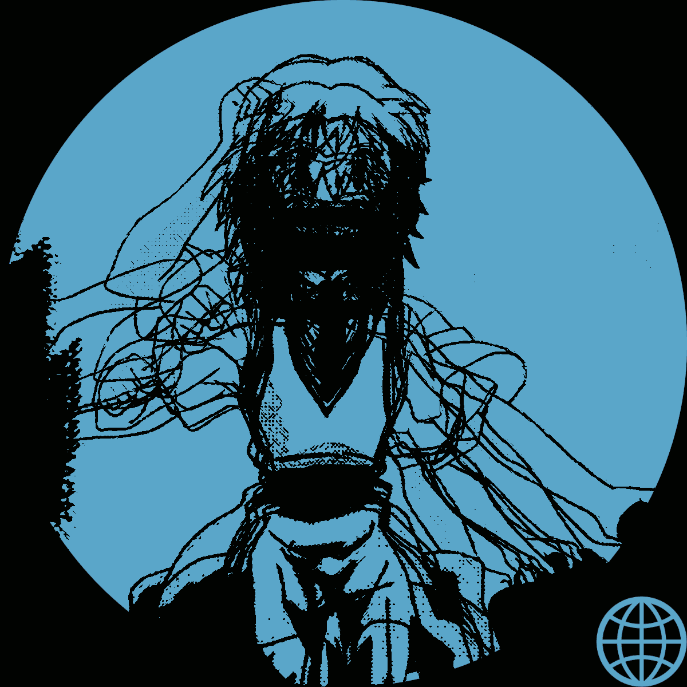

Speedrun
Released October 16th, 2020
With production starting almost immediately after the release of Technicolor and lasting for over seven months, Speedrun is a follow-up destined to avoid the dreaded sophomore slump. It features the same style of high energy dance tracks as it's predecessor, as well as managing to include more relaxed and low tempo songs as well, all with a playful and carefree tone. Best heard at night, the deep bass and striking drums are brought to the forefront, accented by the backbone of sampled synthesizers, electric guitars, and guest vocals. You can expect another crop of fun and lively tracks, along with heavily improved mixing and mastering, to make each track sound full and forceful for its full duration. With samples and sporadic drum patterns crashing left and right, you're in for forty-five minutes of fun with Speedrun, the new album by Blargg.
Tracklist
| Track | Name | Length |
|---|---|---|
| 1 | Origami | 5:52 |
| 2 | Load Screen | 1:10 |
| 3 | Flash Pass | 3:35 |
| 4 | River of Kisses | 6:28 |
| 5 | Lover's Lullaby (feat. Miku Hatsune) | 3:47 |
| 6 | Sega Playstation | 2:52 |
| 7 | B.F.I. | 3:21 |
| 8 | Pep Rally | 6:24 |
| 9 | Cyberplasm | 5:23 |